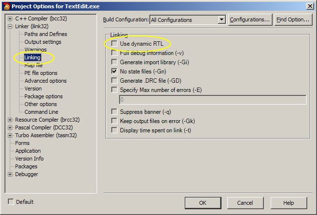
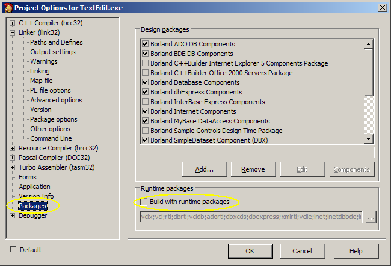
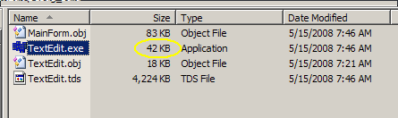
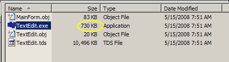
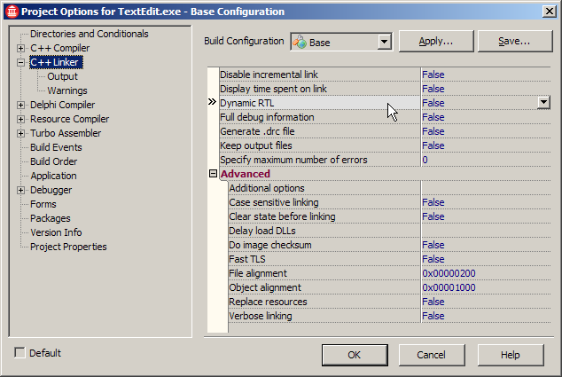

Background Information
Just as no one would think of creating a modern, sophisticated game without the appropriate software development kits (SDK) for sound, graphics, input, physics, etc., most experienced software professionals tend to use development tools to create sophisticated desktop applications. It doesn't make any sense to waste time creating a framework for user interface components because several ready-to-use frameworks already exist for numerous languages and environments.
For C++ on the Windows platform, the state-of-the-art in user interface development comes from a company called Embarcadero (originally CodeGear, which was part of Borland) and the tool is called RAD Studio. (RAD is an acronym for Rapid Application Development.) RAD Studio primarily supports two programming languages: C++ and Delphi. (Delphi is a powerful object-oriented Pascal language that rivals C++ and C# in its power and ease of use.) Fortunately, there is a free version of the tool, albeit, a little bit old now called Turbo C++. It has most of the functionality of the professional tool, but is a few years older now, so it doesn't support some things (e.g. Windows 7 themes, touch interfaces) as easily as the commercial version. The latest version now can be used to easily develop for Windows, Mac OS X, and iOS (iPhone apps), and soon, Linux and Android.
The free Turbo versions of RAD Studio only support a single language. The C++ version is called Turbo C++. For the most part, the free version is very similar to the commercial version and includes a full-blown, modern and powerful IDE. There are only very slight limitations with the free version of the IDE.
The subset of RAD Studio supporting C++ is called C++ Builder. Read about it at C++ Builder on Wikipedia.
|
|
Prof. Mead will be giving the talks to interested students. The pre-requisites for this class are:
|
|
|
I will be presenting a series of demonstrations on building GUI applications in Windows using
Turbo C++ Explorer, a Rapid Application
Development tool from Embarcadero. (Embarcadero bought CodeGear which was the developer tools division of Borland Software.)
Turbo C++ is a lighter version of Embarcadero's flagship RAD Studio. RAD Studio contains support for
three programming languages: C++, Delphi, and Delphi.NET. (It used to support C#, as well.)
Digipen has an older version of RAD Studio (2010, but newer than Turbo C++) installed on the computers in Einstein, I believe. Almost everything that I will cover can be done with pretty much any version. So if those are all you have access to, you should be fine. Turbo C++ is installed on all Digipen computers. |
|
|
Mondays at 1:45 pm, Wednesdays at 2:00 pm. The session will last about 90 minutes and will go (tentatively) from Monday, May 13 through Wednesday, June 19. |
|
|
Einstein |
|
|
Why not? Actually, there are many reasons but the common reason that students want to learn this tool is because it will allow them to quickly develop powerful and professional GUI tools for their projects. I used to give a small, 2 hour session on a similar tool several years ago. You can read about that session's purpose here. Keep in mind that a lot of the information in that post is outdated. However, the theory behind the session is still pretty relevant to the lecture series I'm proposing this summer. |
Files and References
You most likely won't be able to download the files you need to install Turbo C++ as they no longer distribute it. However, you can download a local copy here:You'll need a free key to use to IDE. (If you are just using the command line compiler, you don't need a key.) You won't be able to get one online, so use this one: reg740.txt. Follow the directions in that file.
If you think you want to just go straight to the latest version, you can get a 30-day free trial of RAD Studio XE 4 from their webiste. Be warned, though, that once you experience a true Visual C++ rapid application development tool, you'll never be able to use anything else!
It doesn't really matter too much which version you use as long as you use one of them. Like all software implementation (read: programming) classes, you're only really going to understand the details if you actually practice. You are more than welcome to just sit in the sessions and watch along, but, if you really want to learn how to develop applications, you will need to work with all of the examples that I post. (And there will be many.)
These documents are provided with Turbo C++:
| Help Guide | This document contains information on building applications in C++, C#, and Delphi and can be found on your computer in the Help folder in the installation directory. (2,439 pages) |
| Reference Guide | This document is mainly a language reference for C++ and Delphi. You may be interested in the C++ extensions that support the Turbo RAD environment. This can be found on your computer in the Help folder in the installation directory. (899 pages) |
These PDF documents will give you a good background on using the tool. They were written for an older version of the IDE called Borland C++ Builder 6. Most of the information is relevant to the new Turbo C++ tool. However, some of the screen shots will look different, since the new IDE has changed somewhat from the older one.
| Quick Start | Like the title says, this is the place to start. Even though it's for an older version, it is still a good introduction. (100 pages) |
| Developer's Guide #1 | This guide is the official developer's guide that was distributed from Borland. (1,284 pages) |
| Developer's Guide #2 | This document contains two chapters from a book called "C++ Builder 6 Developer's Guide". Both chapters are about the Visual Component Library (VCL), so they are still relevant today. (117 pages) |
| Object Pascal Reference | This book was also distributed with the original software. It's basically a description of the Object Pascal language. May come in useful for some people. (256 pages) |
| Teach Yourself Borland C++Builder in 14 Days | This is another older book, but much of it is still relevant today. The screen shots may be from an earlier version of the IDE, but the content about components is probably still accurate. |
| BCB VCL Poster | This is the poster of the hierarchy of the VCL. Again, it's from an older version, but it gives you a good idea of how rich the library is. (This is actually from about 7 years ago.) |
| C++ Builder Website | Back issues from 1997 to 2013. |
Nick Hodge's Demos He used to be a product manager at Codegear and has made 30 (Flash) videos demonstrating how to use the Turbo development tools. (He's also the guy who helped me get Digipen the unlimited license key for the software.) Most of the videos discuss the Delphi programming language, and you may or may not be interested in those. A good one to watch first is the Intro to the IDE This gives an overview of the major parts of the IDE. There are also a few videos that demonstrate how to create a text editor. (It's very similar to the demonstration I gave.) One thing to note about these videos is that Nick is using Turbo Delphi. The IDE is identical to Turbo C++, but the language is different. You should still be able to follow the presentations without much difficulty.
There used to be a great site called BCBDEV.com, which closed down a few years ago. However, the entire website (mostly code examples and FAQs) can be downloaded from this zip file. (There's an archive here) It's a good thing to have and to browse through. There are topics and links on using Visual C++ DLLs with Borland's tools, OpenGL, etc. The articles are older and refer to C++ Builder, but I suspect that most, if not all, of the information will still be relevant to the current tools.
Planned Topics
These are in no particular order, but I hope to cover everything at some point. Of course, these are subject to change, and I will be updating this as the lectures progress to try and give you a sense of what we'll be covering.
| Basics | IDE | Components | Miscellaneous |
|---|---|---|---|
| Component Properties and Events | Desktops (workspaces) | Action lists (Abstract code from interface) | User interface design |
| private, protected, public, and __published components and events | Component palette and common category | Menus | Saving program state (e.g. INI files) |
| Relationship between the form/components and the code | Form designer | Header control (lists) for sorting | Drag and drop |
| How the IDE manages your code | Object Inspector | Hints | Debugging |
| Programming with the Visual Component Library (VCL) | Structure window | Canvas, Frames, TreeView, HeaderView, Timers | Status bars |
| Design-time vs. Run-time component creation | Built-in source control (ala subversion) | Toolbars (dockable, floating) | Command line compiling |
| Visual components (e.g. TButton class) vs. non-visual (TAction class) | Text forms vs. binary forms | Dialogs (for choosing files, fonts, printers, colors, etc.) | CodeGuard |
| Form creation (automatic vs. manual) | Source repositories (code sharing) | The Indy components (networking) | Component creation |
| Parent vs. Owner | Component templates | ||
| Containers vs. non-containers | Using 3rd party components (there are 1,000s of add-ons, many are free) | ||
| Component positioning, anchors, alignment, and resizing | Owner draw (custom fonts/colors/images in basic components like TList, TStatusBar, etc.) | ||
| Multi-threaded applications | |||
| Using the Windows clipboard | |||
| Drag and drop between windows and applications | |||
| OLE (Object Linking and Embedding) Automation | |||
| GDI drawing | |||
| Applications with multiple windows |
Weekly Sessions
These projects were originally developed with the free Turbo C++ version, and most worked with the latest version of RAD Studio (XE 3 at the time). I have updated (almost) all of the projects to XE 3 and included download links for them. You have the choice of downloading the Turbo C++ version or the XE 3 version. A few projects could not be upgrade (older components) and a couple of projects only work with the newer versions (they use 3rd party components.) I haven't tested with XE 4, but I'm pretty sure that the changes from XE 3 to XE 4 were very minor.
Miscellaneous Sessions (that didn't really happen this time):
Session 1 Monday, May 13, 2013 Overview of the Turbo C++ IDE, building from the command line, simple Windows application Session 2 Wednesday, May 15, 2013 Actions, menus, toolbars, image lists, file dialogs Session 3 Monday, May 20, 2013 Basic component overview: Page component (tabs), checkboxes, radio buttons, groups, spin-edits, sliders. Session 4 Wednesday, May 22, 2013 Creating a tile-based editor for a platform game. Monday, May 27, 2013 Memorial Day. No class. Session 5 Wednesday, May 29 2013 Drag and drop (WM_DROPFILES), right-mouse support, multiple forms. Session 6 Monday, June 3, 2013 Persisting values between application runs. (.ini files, TMemIniFile, properties, Undo, MessageDlg) Session 7 Wednesday, June 5, 2013 List views (TListView), intra-program drag and drop Session 8 Monday, June 10, 2013 Tree views (TTreeView, TTreeNode), drag and drop, filesystem traversals (tree algorithms) Session 9 Wednesday, June 12, 2013 TThread class, thread priorities, TListView class, file system search, ShellExecute, Windows clipboard Session 10 Monday, June 17, 2013 Customizing behavior with OwnerDraw styles. Detecting multiple instances of an application and communicating between them (IPC), DLLs. Session 11 Wednesday, June 19,, 2013 TToolBar, TCoolBar, TMediaPlayer, TScrollBox, TMaskedEdit
Session 12 OLE Automation (COM) This uses Word 2000, so it may not compile and run without it, but I'm keeping it here anyway. Session 13 TCP/IP networking using the Indy Components. (Chat client/server)
Additional Information: Project Settings
By default, C++ Builder builds applications to use runtime libraries (RTL) and packages. This keeps the size of the executables smaller, but requires the users to have additional files installed on their computers. (Not generally a good idea in Windows.) Since most people don't have C++ Builder installed on their computers, they won't be able to run the executables without these additional dependencies. The preferred way to build applications is statically, so that all necessary components and libraries are included in the executable. It will make the executable larger, but that's no longer an issue these days. To build static executables, you have to change two settings in the project options. From the menu in the IDE, go to Project | Options... or press Ctrl-Shift-F11 to open the Project Options dialog box. You may want to collapse the "C++ Compiler (bcc32)" options, as it takes up all of the dialog box's list space.
| Disable "Use dynamic RTL" under the Linker options | Disable "Build with runtime packages" under the Packages option |
|---|---|
|  |  |
| File size when using the RTL and packages | File size without the RTL and packages |
|---|---|
|  |  |
Yes, it's larger, but it will work on any computer now.
| Disable "Dynamic RTL" in the C++ Linker options in RAD Studio 2010 (The XE versions probably look similar) |
|---|
|  |